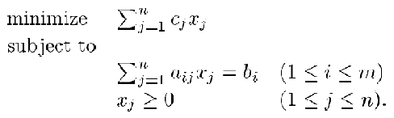
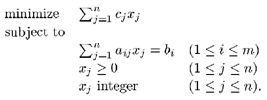

Overview of mathematical programming¶
Linear programming was revolutionized when CPLEX® software was developed over 20 years ago. CPLEX was the first commercial linear optimizer on the market to be written in the C programming language. CPLEX gave operations researchers unprecedented flexibility, reliability, and performance, allowing them to create novel optimization algorithms, models, and applications.
The name CPLEX itself is a pun that is built on the concept of a Simplex algorithm that is written in C: C-Simplex resulted in CPLEX.
The Simplex algorithm, invented by George Dantzig in 1947, became the basis for the entire field of mathematical optimization and provided the first practical method to solve a linear programming problem.
CPLEX evolved over time to embrace, and become a leader in, the children categories of linear programming, such as integer programming, mixed integer programming, and quadratic programming.
Depending on how familiar you are with linear programming, you might be interested in various levels of information about linear programming and how they are handled by CPLEX.
The information that is presented in the following sections goes from the highest level fundamental explanation of what linear programming is (and how it runs in CPLEX) down to more advanced concepts.
Finally, some external references that help with learning operational research techniques are presented.
Linear programming: An essential optimization technique¶
The concept behind a linear programming problem is simple. It consists for four basic components:
- Decision variables represent quantities to be determined.
- An objective function represents how the decision variables affect the cost or value to be optimized (minimized or maximized).
- Constraints represent how the decision variables use resources, which are available in limited quantities.
- Data quantifies the relationships that are represented in the objective function and the constraints.
In a linear program, the objective function and the constraints are linear relationships, meaning that the effect of changing a decision variable is proportional to its magnitude. While this requirement might seem overly restrictive, many real-world business problems can be formulated in this manner.
Examples of problems solved with linear programming¶
| Industry | Problem |
|---|---|
| Manufacturing |
|
| Supply chain | Product deployment |
| Time tabling | Manpower planning |
| Transportation | Network flows |
Integer programming¶
Sometimes, linear relationships are not enough to capture the essence of a business problem, particularly when decisions involve discrete choices, such as whether or not to open a warehouse at a particular location. For these situations, you need to use integer programming (or, if the problem includes both discrete and continuous choices, it is a mixed integer program). Mixed integer programs can have linear or convex quadratic objectives and linear, convex quadratic or second-order cone constraints.
Examples of mixed integer programming problems¶
Examples of mixed integer programming problems include:
- Vehicle routing
- Facility location
- Personnel scheduling
- Power plant commitment
- Costs with fixed and variable components
- Materials cutting
- Network design
Integer programs are much harder to solve than linear programs, but they have important business applications. CPLEX uses sophisticated mathematical techniques to solve hard integer programs. These techniques involve systematically searching over possible combinations of the discrete decision variables, by using linear or quadratic programming relaxations to compute bounds on the value of the optimal solution. They also use linear programming and other techniques to compute linear constraints that cut off possible solutions that violate the discreteness constraints. CPLEX’s innovative technologies made it possible to solve mixed integer programs that were previously considered intractable, thus enabling use of optimization in important business applications.
CPLEX algorithms¶
CPLEX is a high-performance mathematical programming solver for linear programming, mixed integer programming, and quadratic programming
- Problem modeling: IBM® ILOG® CPLEX® Optimizer provides a framework to model business issues mathematically.
- Improved profits: IBM ILOG CPLEX Optimizer’s mathematical programming provides technology to help improve efficiency, reduce costs, and increase profitability.
- Fundamental algorithms: IBM ILOG CPLEX Optimizer provides flexible, high-performance mathematical programming solvers for linear programming, mixed integer programming, quadratic programming, and quadratically constrained programming problems. These include a distributed parallel algorithm for mixed integer programming to leverage multiple computers to solve difficult problems.
- Robust algorithms for large problems: IBM ILOG CPLEX Optimizer has solved problems with millions of constraints and variables.
- Industry-leading support: IBM has an impressive rate of product improvement and ample support resources to serve you.
- High performance: IBM ILOG CPLEX Optimizer delivers the power needed to solve large, real-world optimization problems, as well as the speed required for today’s interactive decision optimization applications.
- Robust and reliable: A large installed base helps us make IBM ILOG CPLEX Optimizer better with each release. Every new feature is tested on the biggest, most diverse model library in the world.
More resources on linear programming, with or without CPLEX¶
- Academic lectures
- Books
- Introduction to Linear Optimization - Dimitris Bertsimas, John N Tsitsiklis
- Understanding and Using Linear Programming - Jiri Matousek, Bernd Gartner, Bernd Gartner
- Model Building in Mathematical Programming - H.P. Williams - Wiley
- Linear Programming: Foundations and Extensions - Robert J. Vanderbei - Springer